| Name |
Image |
Tier |
Pool |
Description |
Flavor |
| Black Magic 101 |
 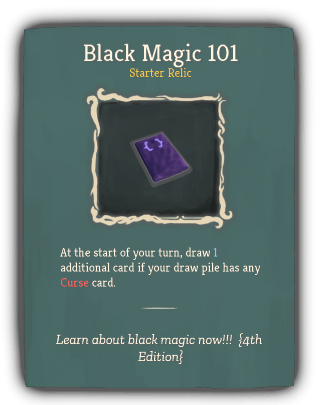 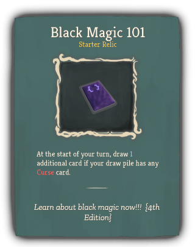 |
Starter |
The_cursed_purple |
At the start of your turn, draw 1 additional card if your draw pile has any Curse card. |
Learn about black magic now!!! {4th Edition} |
| Tack |
 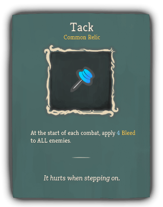 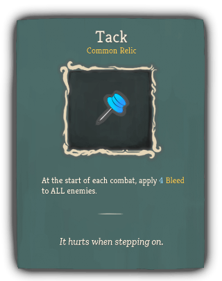 |
Common |
The_cursed_purple |
At the start of each combat, apply 4 Bleed to ALL enemies. |
It hurts when stepping on. |
| Bloody Harpoon |
 |
Uncommon |
The_cursed_purple |
Whenever you apply Bleed, apply an additional 1 Bleed. |
Piercing with it, cannot move! |
| Demonic Mark |
 |
Uncommon |
The_cursed_purple |
Every time you activate an effect of Circle 3 times in a single turn, gain 1 Strength. |
If you've seen this mark somewhere, you're just wrong. (Firmly) |
| Crystal Ball |
 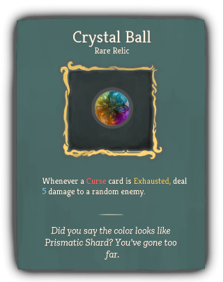 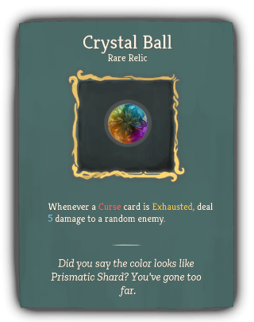 |
Rare |
The_cursed_purple |
Whenever a Curse card is Exhausted, deal 5 damage to a random enemy. |
Did you say the color looks like Prismatic Shard? You've gone too far. |
| Magic Candle |
 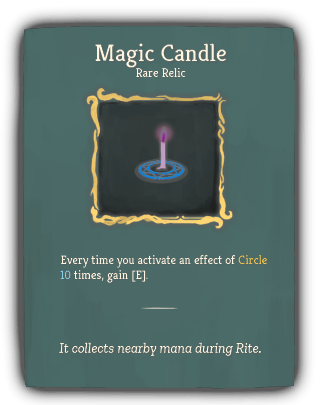 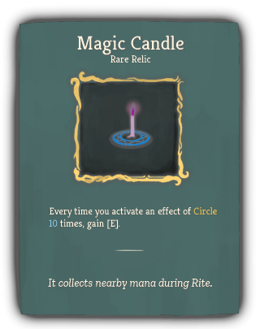 |
Rare |
The_cursed_purple |
Every time you activate an effect of Circle 10 times, gain [E]. |
It collects nearby mana during Rite. |
| Soul Vessel |
 |
Rare |
The_cursed_purple |
At the end of combat, heal HP equal to the number of Exhausted Curse cards in this combat. |
The feast of souls begins now! |
| Black Magic Advanced |
 |
Boss |
The_cursed_purple |
Replaces Black Magic 101. At the start of your turn, draw 2 additional cards if your draw pile has any Curse card. |
[The effects of curses and magic circles on human's body and side effects] |
| Four-Leaf Clover Charm |
 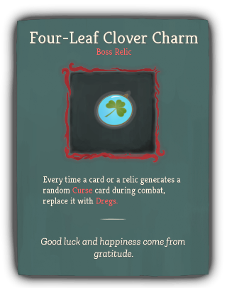 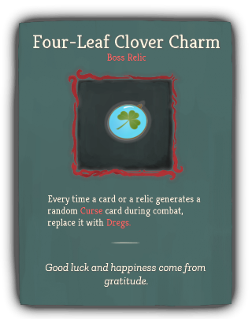 |
Boss |
The_cursed_purple |
Every time a card or a relic generates a random Curse card during combat, replace it with Dregs. |
Good luck and happiness come from gratitude. |
| Ominous Mark |
 |
Boss |
The_cursed_purple |
Gain [E] at the start of your turn. At the start of combat, shuffle 2 random Curse cards into your draw pile. |
Take a closer look, the mark looks shaking... |
| Pink Pellets |
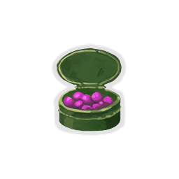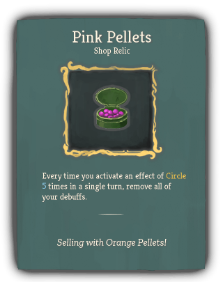 |
Shop |
The_cursed_purple |
Every time you activate an effect of Circle 5 times in a single turn, remove all of your debuffs. |
Selling with Orange Pellets! |
{kind=link}
{kind=link}


{kind=link}
{kind=link}


{kind=link}

{kind=link}